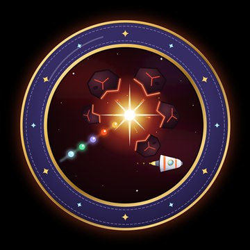

Boss: powtórzenie działu „Dynamika”
Ostatnia bitwa
Orion jest naprawiony i leci do domu. Ale na polu asteroid czeka Grawitor, kamienny strażnik. Przepuści nas tylko wtedy, gdy go pokonamy.
Grawitor zada pytania z całego działu: po dwa z każdego modułu. Każda dobra odpowiedź to pocisk do kosmicznej spluwy. Celuj i strzelaj!


Twój bohater
Wybierz bohatera
Grawitor pokonany!
★★★
 Dział „Dynamika”Wszystkie moduły za Tobą!tematy 24–28
Dział „Dynamika”Wszystkie moduły za Tobą!tematy 24–28
Pogromca bossa